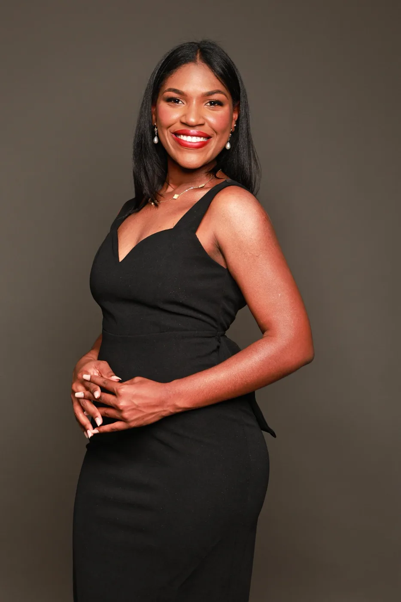

Comunicadora Social, Summa Cum Laude
TiffaniHeredia
Comunico ideas. Creo impacto.
Comunicación interna, estrategia de contenido y producción audiovisual para organizaciones que ponen a su gente primero. Hoy en Hard Rock Hotel & Casino Punta Cana.

Más que comunicar, creo conexiones con propósito.
Me gradué Summa Cum Laude en Comunicación Social en la Universidad Católica Santo Domingo. Mi trabajo está donde se cruzan la estrategia, la creatividad y la gente: convierto ideas en mensajes, campañas y experiencias que acercan a los equipos a la organización para la que trabajan.
He armado la comunicación interna de un resort con miles de colaboradores, llevé la voz de una marca de tecnología en redes, cubrí la agenda institucional de la Dirección General de Aduanas y fui la cara de una campaña de lanzamiento del Banco Popular. Escribo, planifico, produzco y, cuando hace falta, tomo el micrófono.
- Summa Cum Laude
- Licenciatura en Comunicación Social, 2026
- 2,300+
- seguidores en la comunidad que construí para StarBound en Instagram, Threads y Facebook
- Bilingüe
- Español nativo, inglés avanzado oral y escrito
Caso destacado
Built for the
Hard Rock Culture
Un plan integral de comunicación interna para Hard Rock Hotel & Casino Punta Cana. Lo presenté en el Assessment Center para el puesto de Coordinadora de Comunicación Interna y me abrió las puertas de la empresa.
El encargo
Recursos Humanos pidió cinco entregables en una sesión de una hora: un plan anual sobre cuatro pilares de cultura, un evento de cierre de año para 3,500 personas, un programa de pasantías, un plan de información operativa y la comunicación de un cierre temporal de tres meses.
La idea
Un solo concepto que lo une todo: The Beat Behind the Experience. Cada momento inolvidable del huésped empieza con un colaborador que se siente informado, reconocido y orgulloso. Cinco pilares, un mismo beat.
El resultado
Un sistema listo para ejecutar, desde el calendario mensual con responsables, recursos y KPIs hasta el minuto a minuto del evento. Con él gané mi lugar en Hard Rock.
Setlist
Las grandes experiencias no comienzan cuando llega un huésped. Comienzan cuando un colaborador se siente inspirado.
Del cierre del plan 2027
Trayectoria
-
Ene 2026 – Actualidad
Analista de Capacitación y Desarrollo Organizacional | Comunicación Interna
Hard Rock Hotel & Casino Punta Cana
Lidero la comunicación interna dirigida a colaboradores: comunicados y piezas para pantallas, correo y murales, newsletter mensual, redes internas y seguimiento a contenidos de Hard Rock International. Planifico y cubro actividades de desarrollo organizacional, campañas y reconocimientos, además de producir fotografías y videos para los canales internos.
-
Jul 2025 – Ene 2026
Communications Officer
StarBound
Lideré la comunicación y el posicionamiento de la marca en Instagram, Threads y Facebook, desarrollando una comunidad de más de 2,300 seguidores. Creé contenido de principio a fin —copywriting, diseño y edición de video—, definí la voz de marca y gestioné campañas digitales y la comunidad online.
-
Sep 2025 – Ene 2026
Communications Specialist (Freelance)
Concentrix
Apoyé las iniciativas de comunicación y experiencia del cliente en un entorno corporativo internacional, mediante la creación de contenidos y materiales de comunicación.
-
Ene 2026
Cara de campaña, lanzamiento de Toke
Banco Popular Dominicano
Fui la cara visible de la campaña de lanzamiento de Toke, participando frente a cámara en la producción audiovisual de contenido de marca.
-
Mar – Jul 2025
Pasante de Comunicación Digital
Dirección General de Aduanas (DGA)
Redacté copies y contenido optimizado para las redes institucionales, realicé cobertura de actividades y produje contenidos digitales.
-
May – Sep 2024
Cajera
ShopRite, Rio Grande, USA
Brindé atención al cliente y manejé caja en un entorno internacional, multicultural y bilingüe.
-
Jun – Ago 2022
Periodista Digital
Grupo de Medios Hilando Fino
Redacté y publiqué contenidos para el periódico digital, y gestioné información y publicaciones para sus redes sociales.
Contenido que conecta
Piezas que escribí, diseñé, grabé o edité para una marca de tecnología y para una institución pública.
StarBound
Estrategia de contenido para una empresa de software: campañas que explican datos, arquitectura e inteligencia artificial a dueños de negocio, sin tecnicismos. El concepto, el copy, el diseño y la edición fueron míos.
Dirección General de Aduanas
Durante la pasantía en el departamento de Comunicación Digital cubrí la agenda institucional en tiempo real:
- Videos recap, de la Semana de la Ética al primer taller de facilitación del comercio, con guion, caption y música.
- Un video del Día de las Madres que produje, guioné, grabé y edité.
- Carruseles sobre la norma ISO 37001, el programa Global Entry y los sistemas SIGA y VUCE, con la idea y el copy para el equipo de diseño.
- Videos de recaudación que convierten informes oficiales en contenido fácil de leer.
- Hilos en X en vivo para los actos oficiales.
En cámara y en voz
Comunicar también es presencia. Además de planificar el mensaje, lo entrego.
Cara de campaña
Banco Popular Dominicano me eligió como cara del lanzamiento de Toke.
Locutora certificada
Formada en dicción, fluidez y entonación en la Escuela Nacional de Locución Prof. Otto Rivera.
Maestra de ceremonias
Certificada para conducir actos institucionales y corporativos, del protocolo al escenario.
Formación y credenciales
Licenciatura en Comunicación Social
Summa Cum Laude
Universidad Católica Santo Domingo, Facultad de Ciencias Sociales y de la Comunicación. 26 de junio de 2026.
-
Locución
Escuela Nacional de Locución Prof. Otto Rivera, 2023
-
Maestría de Ceremonias
Escuela Nacional de Locución Prof. Otto Rivera, 2023
-
Programa de pasantía, 460 horas
Dirección General de Aduanas, 2025
-
Excelencia en el servicio, inteligencia emocional, liderazgo y gestión del cambio
Ludic Training RD, 2025
-
Programa de Verano
FUNDAPEC, 2019
Nueva certificación · Noviembre 2026
Habilidades para mercadear — Nivel Intermedio
INDOTEL · Banco Interamericano de Desarrollo (BID) · Cymetria · 40 horas
Actualmente cursando los certificados de Google en Project Management y en Marketing y Redes Sociales.
¿Conversamos?
Si buscas a alguien que cuente la historia de tu equipo, me encantaría escucharte.
Descargar mi CV